操作系统原理 · 第 7 章 主存管理
7.3 分区存储管理
分区存储管理是最简单直接的一种存储管理方式：把主存切成若干大小不等的区域，每个作业占用一个或几个区域，操作系统自己也占一块，多个进程因此可以共存。它主要解决的是内存分配问题——这一节就把分配与回收的过程讲清楚，再看它用什么数据结构记住主存的使用情况、按什么策略挑空闲区，最后交代它绕不开的碎片问题、解决办法拼接技术，以及工程上常用的伙伴算法与真实的内存分配器。
1. 分区存储管理的基本原理
分区存储管理的做法是把内存划分为一些大小不等的区域，每个作业进程占用一个或几个区域，操作系统占用其中一个分区。这样做的直接好处是允许多个进程共存，因此它适用于多道程序系统和分时系统，也适用于虚拟地址空间的分配。
这里要抓住一个定位：分区存储管理主要解决内存分配问题。作业提出了多大的地址空间，系统就要在空闲区里替它找一块合适的地方；作业结束，这块地方要还回去，还要尽量与相邻的空闲区合并成更大的块。分配与回收做得是否得当，直接决定了主存的利用率。
2. 动态分区的分配与回收
分区可以在作业装入时按需划分，这就是动态分区。课件用一串连续的申请演示了分配过程：主存共 256KB，操作系统占低端 0–20KB，此后作业 1 申请 32KB、作业 2 申请 14KB、作业 3 申请 64KB、作业 4 申请 100KB、作业 5 申请 50KB，作业依次从低地址端紧贴着往上放。
按这个顺序摆放，各区域依次推进到 52KB、66KB、130KB、230KB：作业 1 占 20KB–52KB，作业 2 占 52KB–66KB，作业 3 占 66KB–130KB，作业 4 占 130KB–230KB。此时尾部只剩下 256 − 230 = 26KB 的空闲区，装不下 50KB 的作业 5——不是主存总量不够（26KB 仍是空闲的），而是剩下的空闲区太小，这正是分区方式要面对的典型困境。
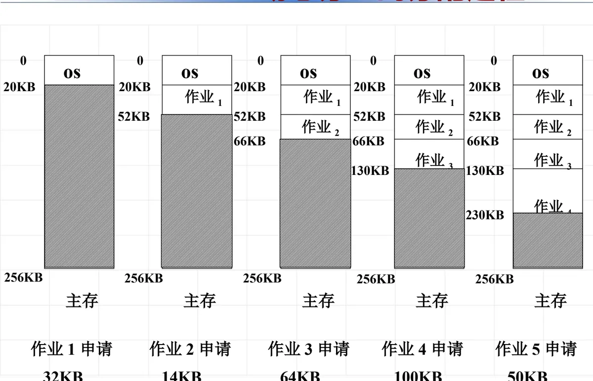
回收的过程与此相反。作业运行结束，它占用的分区要被系统收回，而收回时最值得琢磨的是与相邻空闲区的关系：如果这个分区的上邻或下邻已经是空闲区，就应该把它们合并起来，否则主存里会留下越来越多的「小零头」。课件用一个作业完成、又一个作业完成的例子演示了回收，可以看到空闲区随着回收逐渐向一起并拢。
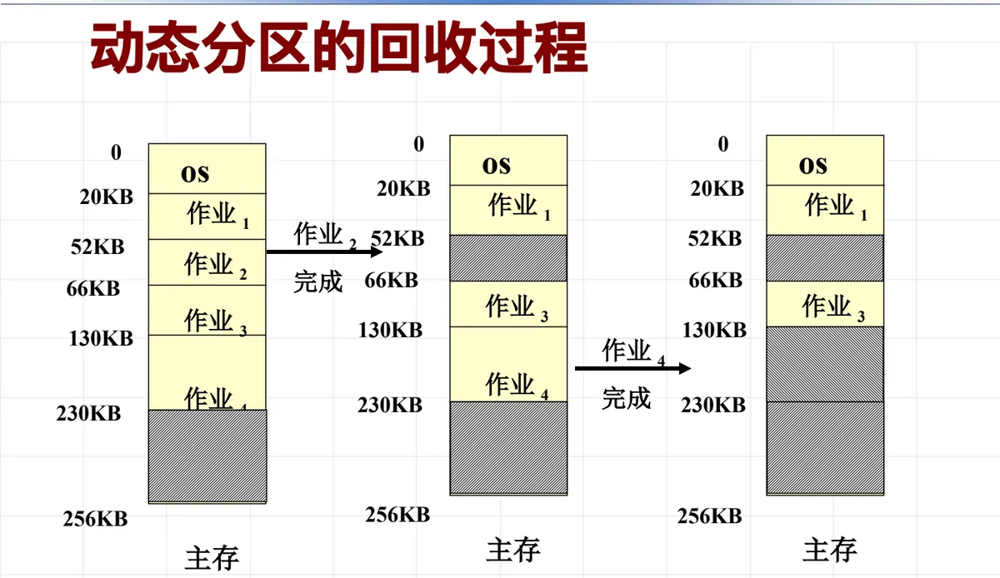
把「与上下邻区的关系」穷举一下，回收只有四种情况，课件用一张图把它们并排列出：
| 情况 | 上邻区 | 下邻区 | 处理办法 |
|---|---|---|---|
| ① | 空闲区 f1 | 已分配区 | r 与 f1 合并，成为一个大的空闲区 f1 |
| ② | 已分配区 | 空闲区 f2 | r 与 f2 合并，成为一个大的空闲区 f2 |
| ③ | 空闲区 f1 | 空闲区 f2 | r 与 f1、f2 三者合并，成为一个大的空闲区 f1 |
| ④ | 已分配区 | 已分配区 | r 自身成为一个新的空闲区 f |
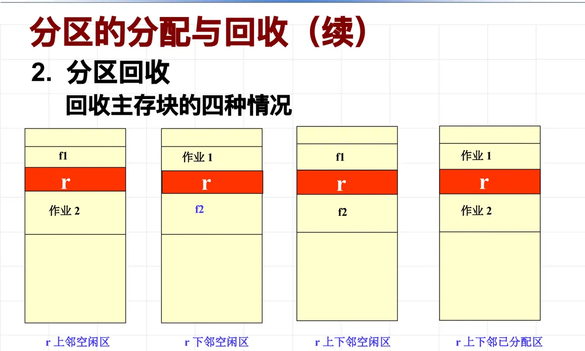
3. 分配的数据结构：M_RIB 与 PD
分配与回收要落地，系统必须先记住「主存现在长什么样」。分区存储管理用了两级数据结构：一个总账本和一串分区说明书。
总账本是主存资源信息块 M_RIB（Memory Resource Information Block），它登记三项内容：等待队列头指针、空闲区队列头指针、主存分配程序入口地址。前两项说明「谁在等」和「哪里还空着」，第三项让系统能找到真正干活的分配程序。
每一个分区（无论空闲还是已分配）都跟着一个分区描述器 PD（Partition Descriptor），它把这块区域的状况记在三个字段里：
| 字段 | 含义 |
|---|---|
| flag（分配标志） | 为 0 表示空闲区，为 1 表示已分配区 |
| size（大小） | 分区大小，等于 n + 3，其中 n 为分区可用字节数（多出来的 3 个字节就是描述器自身的开销） |
| next（指针） | 空闲区时，它是自由主存队列中的勾链字；已分配区时，此项为零 |
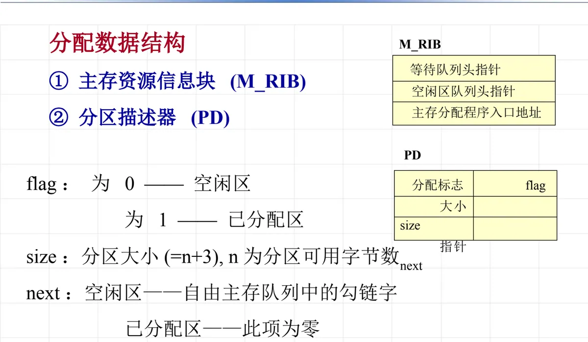
空闲区靠 next 字段勾链成空闲区队列：所有 flag 为 0 的分区串成一条链，M_RIB 的空闲区队列头指针指向链首。作业申请主存时，分区分配程序就沿这条链去找一个满足要求的空闲块：找到之后，比较空闲块与请求块的大小，如果剩余部分大于门限值就把它分割成「已分配区 + 更小的空闲区」，否则整块分配，最后返回所分配区域的首址；如果整条链都找不到足够大的空闲块，就告知不能满足要求。队列怎么排（按地址排还是按大小排），就是下一节的放置策略问题。
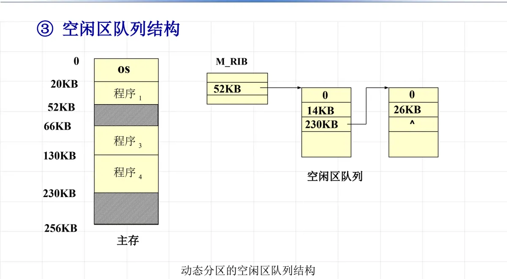
4. 放置策略：按什么顺序挑空闲区
空闲区队列里可能同时有好几块够用的空闲区，究竟挑哪一块？选择空闲区的策略称为放置策略。常用的有三种：首次匹配（首次适应算法）、最佳匹配（最佳适应算法）、最坏匹配（最坏适应算法）。它们的差别不只在挑哪一块，还在空闲区队列的排序方式——排序方式决定了「第一个够用的块」是谁，所以队列结构本身就是算法的一部分。
| 放置策略 | 空闲区队列结构 | 特点 |
|---|---|---|
| 首次适应算法 （首次匹配） |
空闲区按地址由低到高排序 | 把作业放进第一个足够装入它的空闲区；尽可能利用内存低端的空闲区，尽量保存高端的空闲区；分配和释放的时间性能较好，较大的空闲分区可以被保留在内存高端；但随着低端分区不断划分而产生较多小分区，每次分配时的查找时间开销会增大 |
| 最佳适应算法 （最佳匹配） |
空闲区按大小由小到大排序 | 把作业放进与它所需大小最接近的空闲区；尽可能利用存储器中小的空闲区，尽量保存大的空闲区；从个别来看碎片较小，但从整体来看会形成较多碎片 |
| 最坏适应算法 （最坏匹配） |
空闲区按大小由大到小排序 | 把作业放进主存中最不适合它的空闲区（也就是最大的那块）；尽可能利用存储器中大的空闲区；基本不留下小空闲分区，但较大的空闲分区不被保留 |
三种策略孰优孰劣，不能空谈，要放到具体的空闲区分布和作业序列上看。课件给了一个讨论题：主存里现有三块使用中的区域和若干空闲区，紧接着有三个作业依次申请——程序 A 要求 18KB、程序 B 要求 25KB、程序 C 要求 30KB。用三种算法分别走一遍这个序列，结论是：首次适应算法对该作业序列不合适，最坏适应算法也不合适，而最佳适应算法是合适的。
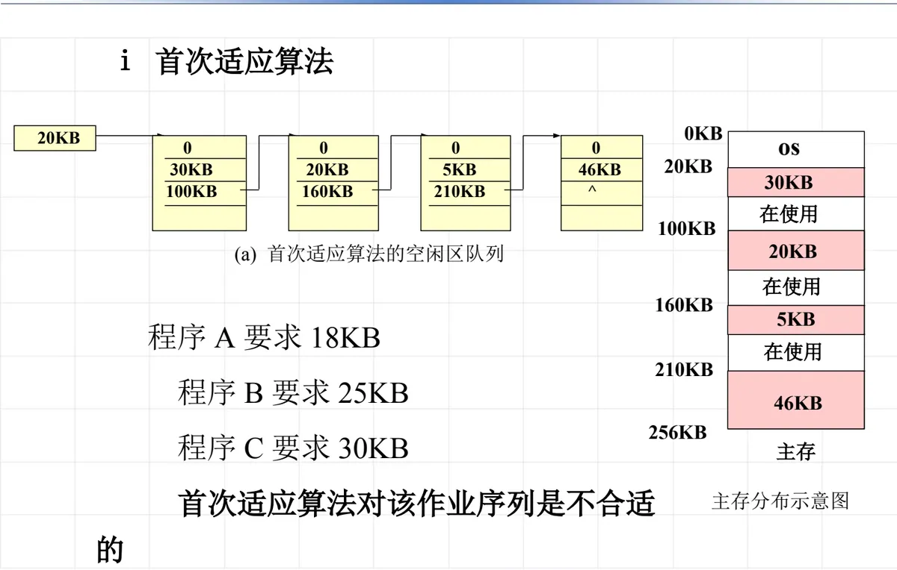
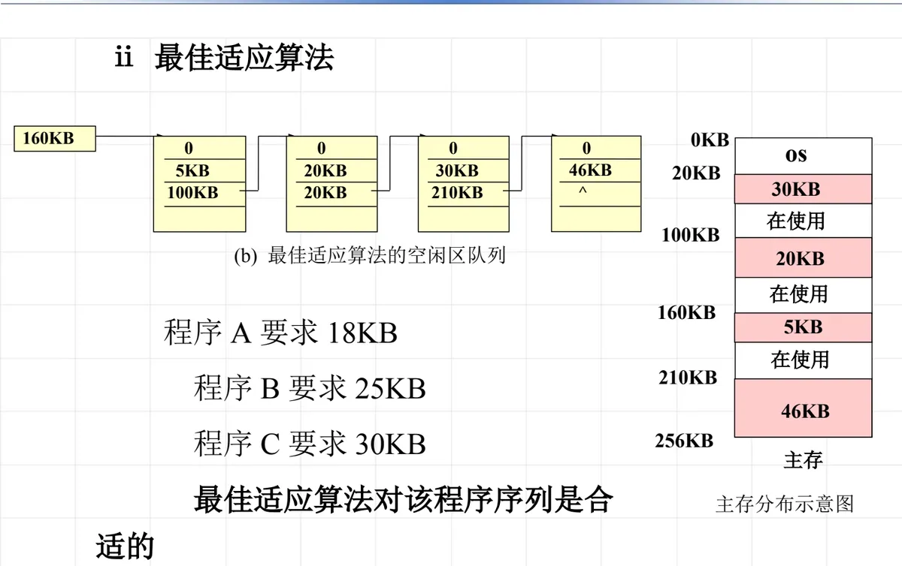
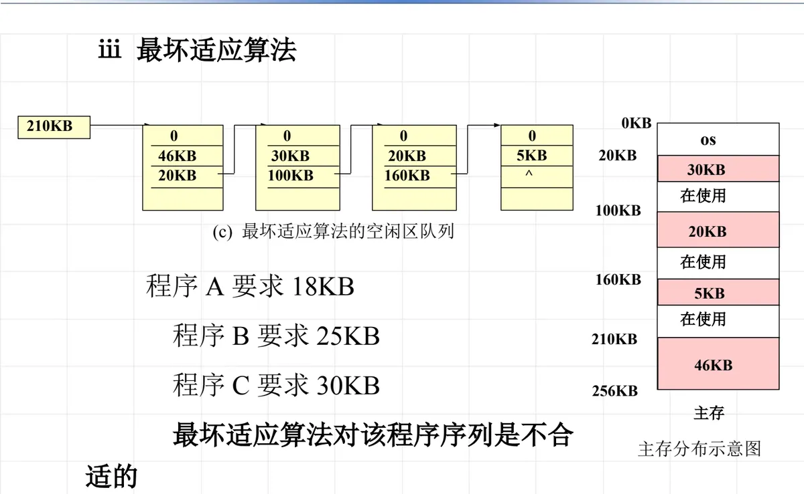
这个讨论给出的教训是：没有哪一种是绝对最优的放置策略，它们的表现取决于当前的空闲区分布与作业序列。首次适应算法实现简单、倾向保留高端大空闲区，代价是低端越切越碎；最佳适应算法看起来最「节省」，但它留下的是大量难以再利用的小碎片；最坏适应算法总在啃大块，能避免小碎片，却把大空闲区消耗掉了。
（1）习题 7-11：哪一种算法分配得下
课件紧接着安排了一道练习：主存中有两个空闲区，一个从 150KB 开始、大小 120KB，另一个从 300KB 开始、大小 78KB；现有作业序列——程序 1 要求 50KB、程序 2 要求 60KB、程序 3 要求 70KB。问用首次适应算法和最佳适应算法处理这个序列，哪一种能分配得下。
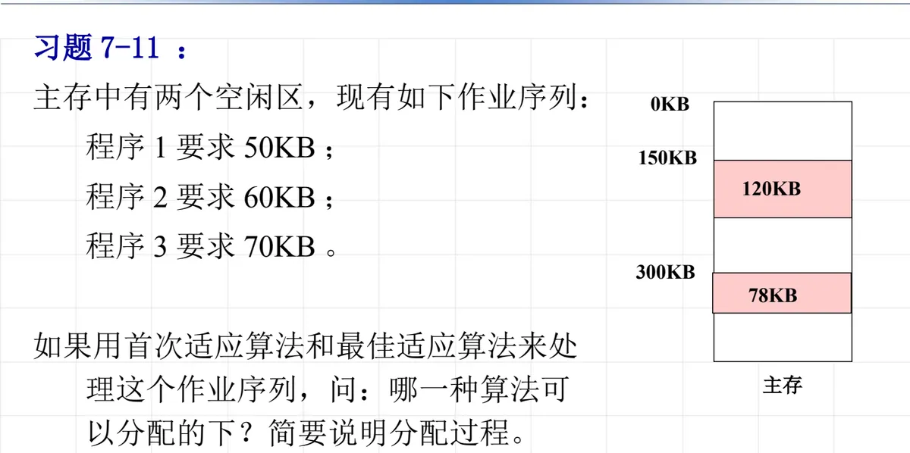
按首次适应算法走一遍：首次适应要求空闲区按地址由低到高排序，队列里先是 150KB 处的 120KB，再是 300KB 处的 78KB。程序 1 要 50KB，取第一块，120 − 50 = 70KB，剩下一块 70KB 的空闲区；程序 2 要 60KB，仍然从低地址找，70KB 够用，70 − 60 = 10KB，只剩 10KB；程序 3 要 70KB，前两块的剩余（10KB）都不够，于是取 300KB 处的 78KB，78 − 70 = 8KB。三个作业全部放下，最后剩下 10KB 和 8KB 两块小空闲区。
按最佳适应算法走一遍：最佳适应要求空闲区按大小由小到大排序，队列里先是 78KB（在 300KB 处），再是 120KB（在 150KB 处）。程序 1 要 50KB，78KB 是「最接近」的，78 − 50 = 28KB；程序 2 要 60KB，剩下的 28KB 不够，只能用 120KB 那块，120 − 60 = 60KB；程序 3 要 70KB，而此时手上只有 28KB 和 60KB 两个空闲区，都不够。最佳适应算法反而分配不下。
这道题正好印证了上一条结论：最佳适应算法每次都在挑「最贴近需求」的那块，看似节省，却可能把大块拆小、把可用的空间提前耗尽。
5. 碎片问题与拼接技术
分区存储管理有一个绕不开的毛病。作业要求分配的逻辑地址是一个连续的范围，系统就必须在物理主存里找一块同样连续的区域给它；当已分配区之间剩下的空闲区都很小、谁也用不上时，这些「没被充分利用的小空闲区」就是碎片。碎片的存在使主存的利用率下降：总量明明够，却因为没有一块足够大的连续区域而无法再装入新作业。
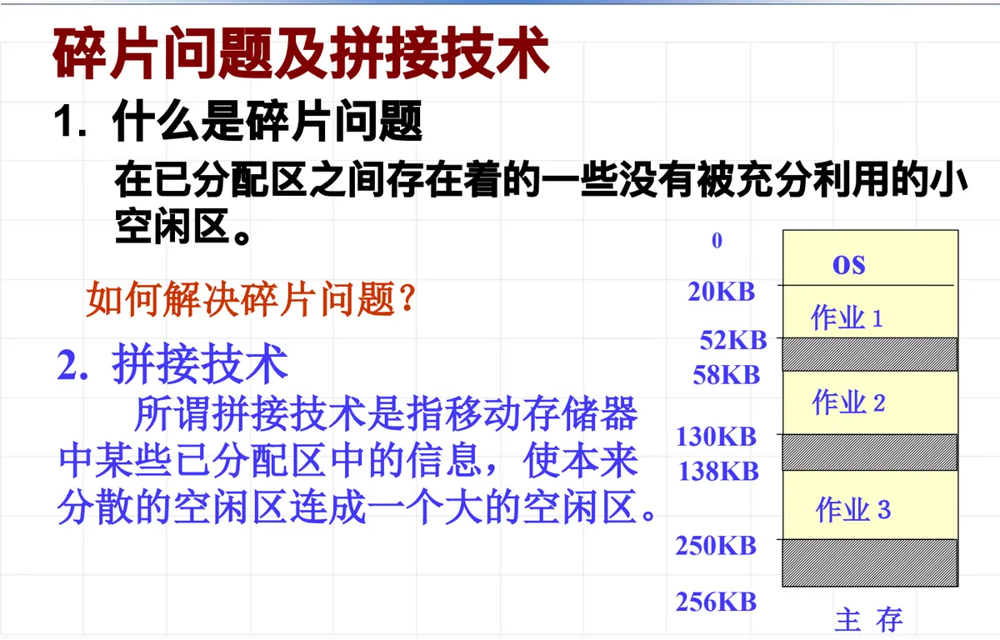
对付碎片有一个直接的办法——拼接技术（也叫紧凑）：移动存储器中某些已分配区的信息，使本来分散的空闲区连成一个大的空闲区。图 11 演示的正是这件事：把作业 1、作业 2、作业 3 依次向低地址方向挪动，散落的空闲区就在高端并成一大块。
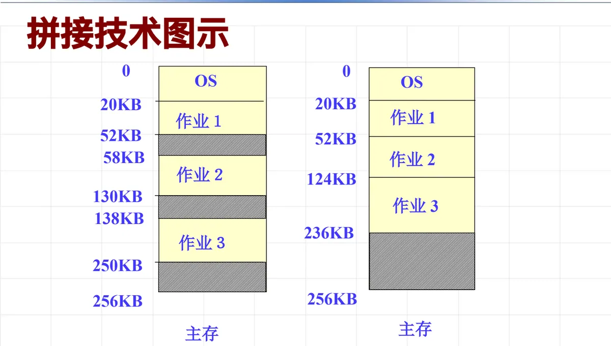
拼接能解决问题，但代价不小，课件把它归纳为三点：
- 移动分区要花费 CPU 时间；
- 拼接时必须停止所有工作，影响系统性能；
- 需要重新定义内存中的作业（地址变了，相关的地址信息都要跟着调整）。
正因为代价大，拼接不能作为常规手段频繁使用。这也逼出了后面的新思路：干脆避开「程序必须连续存放」这个前提——分页正是在这条路上走出来的。
6. 伙伴算法与工程上的常用做法
除了上面三种放置策略，还有一种历史上有名的分配算法——伙伴算法（buddy system）。它的规则是：把内存分为大小相等的页，每次只能分配 2n 个内存单元（n = 0、1、2、…），也就是说可分配的大小只能是 2 的幂。这样规定之后，空闲块的合并就有了确定的搭档。
两个块互为伙伴的条件有三条：
- 两个块具有相同的大小，记作 2b；
- 它们的物理地址是连续的；
- 第一块的第一个页的物理地址是 2b 的倍数——也就是第 0 块与第 1 块是伙伴、第 2 块与第 3 块是伙伴，而第 1 块与第 2 块不是伙伴。这样规定是为了保证一对伙伴合并后得到的仍是符合对齐要求的大块，从而能继续向上合并。
用公式写出来，大小同为 2b 的一对伙伴就是：起始于 2n·2b 的那一块，与起始于 (2n+1)·2b 的那一块。回收时若自己的伙伴也是空闲的，两块就合并成一个 2b+1 大小的块，并继续向上检查能否再合并。
课件给出一个练习来体会这套规则：总大小 1M 的内存，以 1K 为分配单位，操作序列是——请求 A = 100KB、请求 B = 240KB、请求 C = 64KB、请求 D = 256KB、释放 B、释放 A、请求 E = 75KB、释放 C、释放 E、释放 D。做这类题的第一步是把请求量向上凑成 2 的幂：
| 请求 | 申请大小 | 实际分配（向上取 2 的幂） |
|---|---|---|
| A | 100KB | 128KB |
| B | 240KB | 256KB |
| C | 64KB | 64KB |
| D | 256KB | 256KB |
| E | 75KB | 128KB |
剩下的就是按「分裂到够用、合并到伙伴」的规则一步步走：不足的部分由更大的空闲块对半分裂而来，释放时只与自己的伙伴合并，伙伴不空闲就原地留着。这也解释了它的两个特点：分配与回收都快（找伙伴靠地址异或即可），但块大小只能取 2 的幂，块内装不满的部分就浪费掉了，这种浪费叫内部碎片。
实际系统里的内存分配器并不照搬教科书算法，而是走一条更务实的路线：程序中频繁分配的是小内存，就用一整块内存（比如 4K）集中管理、切分着分；大内存则以 4K 为单位分配——因为大内存分配的次数少，产生碎片的机会自然就少，大内存的碎片也会少。Linux 下的 ptmalloc、Google 的 tcmalloc、Facebook 的 jemalloc 都属于这一类实现。
本节小结
- 分区存储管理把内存划分为大小不等的区域分给作业，操作系统占其中一块，允许多个进程共存；它主要解决内存分配问题。
- 动态分区按需划分：分配时在空闲区队列中找一块够用的空闲区，剩余部分大于门限值就分割、否则整块给出；回收时要看与被回收分区上下相邻区域的状态，分四种情况与相邻空闲区合并。
- 数据结构是一本总账加一串说明书：主存资源信息块 M_RIB 记录等待队列头指针、空闲区队列头指针和主存分配程序入口地址；每个分区有分区描述器 PD，含分配标志 flag、大小 size（= n + 3）和指针 next（空闲区为勾链字，已分配区为零）。
- 三种放置策略的差别在于空闲区队列的排序：首次适应按地址由低到高、最佳适应按大小由小到大、最坏适应按大小由大到小。没有绝对最优——课件题例中 A 18KB、B 25KB、C 30KB 的序列只有最佳适应算法放得下；习题 7-11 中反而是最佳适应算法分配不下、首次适应算法放得下。
- 分区方式的根本缺陷是碎片：连续分配的要求使小块空闲区无法利用。拼接技术能合并空闲区，但要花费 CPU 时间、要停止所有工作、还要重新定义内存中的作业。
- 伙伴算法把内存按页等分、每次只分配 2 的幂大小的块，伙伴须同大小、地址连续且首地址为 2b 的倍数，回收时与伙伴合并；代价是块内可能浪费（内部碎片）。实际系统用 ptmalloc、tcmalloc、jemalloc 这类分配器，小内存集中切分、大内存按 4K 为单位分配。